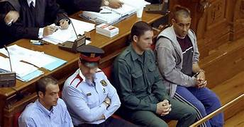

Hace trece años se produjo una huida criminal que puso en jaque a los Mossos d’Esquadra y a la sociedad catalana. Se trataba de los presos Manuel Brito Navarro y Francisco Javier Picatoste, fugados el 14 de octubre de 2001. Los dos coincidieron en la prisión de Ponent, Lérida, y forjaron una amistad. Brito estaba condenado a 30 años por robo y homicidio. El día de la fuga tuvo que ser trasladado al hospital, desde donde ocurrió todo. Estuvieron 32 días ocultándose en la sierra de Collserola con la ayuda de otras cinco personas, quienes les proporcionaron armas, coches, cobijo y alimentos durante los días que permanecieron ocultos. Su plan era asaltar a un narcotraficante secuestrando a su hijo, arrebatarle la droga y asesinarlo en San Pedro de Ribas. Sin embargo, no pudieron llevarlo a cabo porque fueron detenidos.
